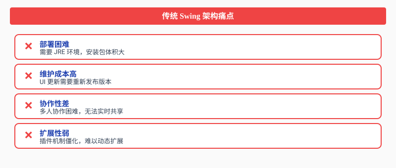
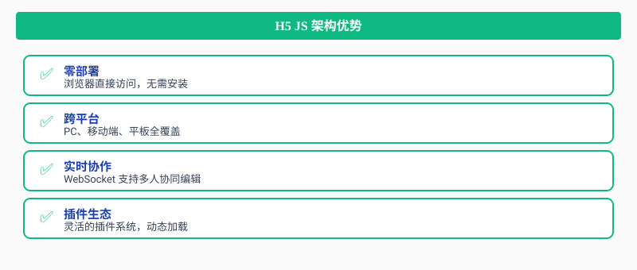
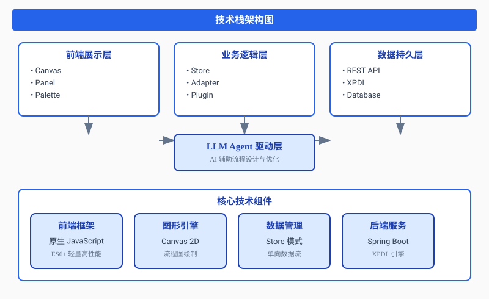
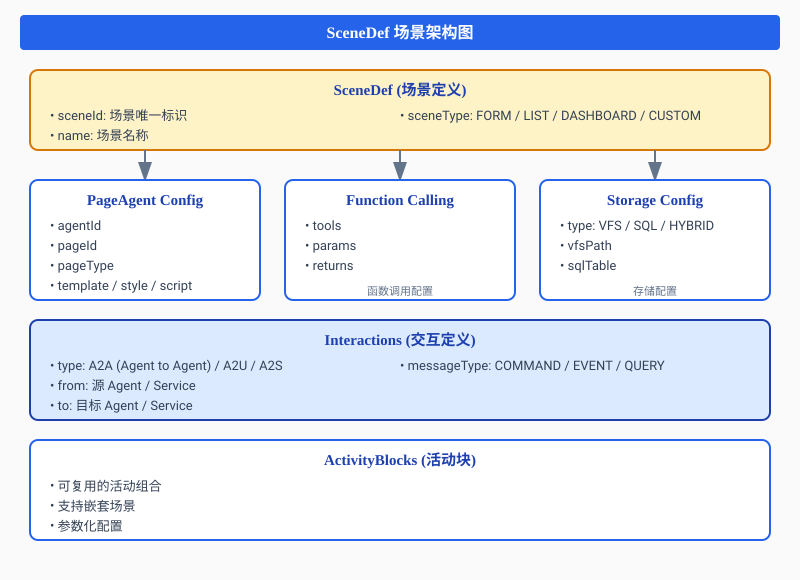
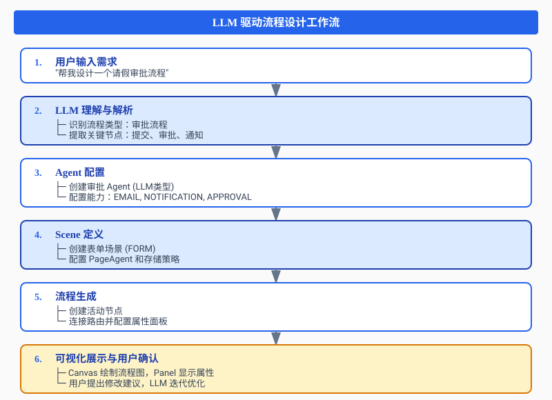
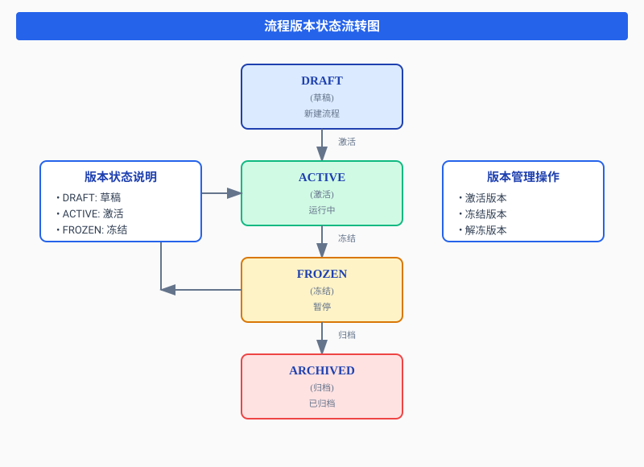
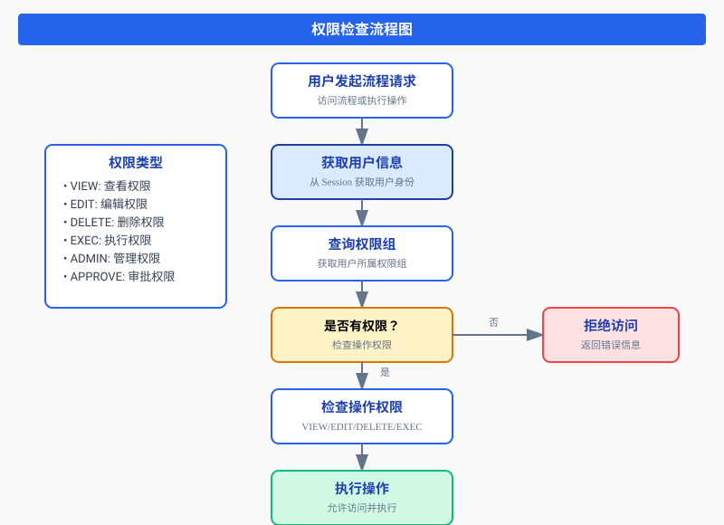
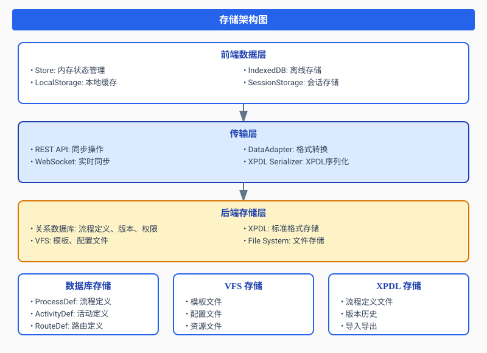

1. 架构升级决策
1.1 为什么选择 H5 JS 架构？
传统 Swing 桌面应用虽然稳定，但面临着以下挑战：

H5 JS 架构的优势：

1.2 技术栈选型

核心技术选型：
| 层级 | 技术选型 | 说明 |
|---|---|---|
| 前端框架 | 原生 JavaScript (ES6+) | 轻量、高性能、无框架依赖 |
| 图形引擎 | Canvas 2D | 流程图绘制，性能优异 |
| 数据管理 | Store 模式 | 单向数据流，状态管理清晰 |
| 数据适配 | Adapter 模式 | 前后端数据格式转换 |
| 插件系统 | Plugin 架构 | 动态加载，可扩展性强 |
| 后端服务 | Java Spring Boot | 兼容现有 XPDL 引擎 |
| AI 集成 | LLM Agent | 智能流程设计与优化 |
1.3 架构迁移策略
采用渐进式迁移策略，确保业务连续性：

2. XPDL 读取和翻译为标准 SPAC
2.1 XPDL 格式解析
XPDL (XML Process Definition Language) 是工作流管理联盟（WfMC）定义的流程定义标准格式。
核心结构：
<WorkflowProcess Id="process_001" Name="请假流程">
<!-- 流程基本信息 -->
<ProcessHeader>
<Created>2024-01-01</Created>
<Description>员工请假审批流程</Description>
</ProcessHeader>
<!-- 活动定义 -->
<Activities>
<Activity Id="act_start" Name="开始">
<StartOfProcess/>
</Activity>
<!-- 更多活动... -->
</Activities>
<!-- 路由定义 -->
<Transitions>
<Transition Id="trans_1" From="act_start" To="act_submit"/>
<!-- 更多路由... -->
</Transitions>
</WorkflowProcess>2.2 SPAC 标准属性定义
SPAC (Standard Process Attribute Configuration) 是我们定义的标准流程属性配置格式，用于统一前后端数据结构。
核心设计原则：
- 完整性：覆盖 XPDL 所有属性
- 一致性：前后端使用相同的数据结构
- 扩展性：支持自定义扩展属性
- 验证性：基于 JSON Schema 的数据校验
2.3 数据转换适配器
DataAdapter 核心实现：
class DataAdapter {
constructor() {
this.mappings = this._initMappings();
}
_initMappings() {
return {
processDef: {
// 直接映射字段
direct: ['processDefId', 'name', 'description', 'version'],
// 字段重命名
rename: {
'status': 'state',
'category': 'classification'
},
// 扩展属性
extended: ['agentConfig', 'sceneConfig', 'formulas'],
// 特殊处理
special: ['startNode', 'endNodes', 'listeners', 'rightGroups']
}
};
}
// 前端数据 -> 后端格式
toBackend(frontendData) {
// 转换逻辑...
}
// 后端数据 -> 前端格式
fromBackend(backendData) {
// 转换逻辑...
}
}3. 全新架构和插件理念设计
3.1 插件系统架构
插件系统是整个设计器的核心，采用微内核 + 插件架构模式。

3.2 插件接口设计
基础插件接口：
class PanelPlugin {
constructor(name, icon) {
this.name = name;
this.icon = icon;
this.container = null;
}
// 初始化插件
init(container) {
this.container = container;
}
// 渲染面板内容
render(data) {
throw new Error('PanelPlugin.render() must be implemented');
}
// 销毁插件
destroy() {
if (this.container) {
this.container.innerHTML = '';
}
}
}3.3 插件管理器
PanelManager 实现：
class PanelManagerNew {
constructor(container, store) {
this.container = container;
this.store = store;
this.plugins = new Map();
this._init();
}
_init() {
this._registerProcessPlugins();
this._registerActivityPlugins();
this._registerRoutePlugins();
}
render(type, data) {
const tabs = this.plugins.get(type);
// 渲染标签页和内容...
}
}4. LLM 驱动场景流程实现（重点）
4.1 LLM Agent 架构设计
LLM Agent 是整个系统的智能化核心，实现了AI 驱动的流程设计与优化。

4.2 AgentDef 核心实现
智能体定义类：
class AgentDef {
constructor(data) {
this.agentId = data?.agentId || this._generateId();
this.name = data?.name || '新Agent';
// Agent 类型
this.agentType = data?.agentType || 'LLM';
// LLM: 大语言模型驱动
// TASK: 任务执行型
// EVENT: 事件触发型
// HYBRID: 混合模式
// 调度策略
this.scheduleStrategy = data?.scheduleStrategy || 'SEQUENTIAL';
// SEQUENTIAL: 顺序执行
// PARALLEL: 并行执行
// CONDITIONAL: 条件执行
// 协作模式
this.collaborationMode = data?.collaborationMode || 'SOLO';
// SOLO: 独立模式
// HIERARCHICAL: 层级模式
// PEER: 对等模式
// 能力集合
this.capabilities = data?.capabilities || [];
// LLM 配置
this.llmConfig = data?.llmConfig || new LLMConfig();
// 工具集
this.tools = data?.tools || [];
// 记忆系统
this.memory = data?.memory || { enabled: false, maxTokens: 4000 };
}
}4.3 SceneDef 场景定义
场景是 LLM Agent 的执行环境，定义了 Agent 如何与页面、数据和用户交互。

场景定义实现：
class SceneDef {
constructor(data) {
this.sceneId = data?.sceneId || this._generateId();
this.name = data?.name || '新场景';
// 场景类型
this.sceneType = data?.sceneType || 'FORM';
// FORM: 表单场景
// LIST: 列表场景
// DASHBOARD: 仪表盘场景
// CUSTOM: 自定义场景
// PageAgent 配置
this.pageAgent = data?.pageAgent || new PageAgentConfig();
// 函数调用配置
this.functionCalling = data?.functionCalling || [];
// 交互定义
this.interactions = data?.interactions || [];
// 存储配置
this.storage = data?.storage || new StorageConfig();
}
}4.4 AgentPanel 实现
Agent 配置面板：
class AgentPanel {
constructor(container) {
this.container = container;
}
render(activity) {
const agent = activity.agentConfig || new AgentDef();
this.container.innerHTML = `
<div class="d-section">
<div class="d-section-title">Agent 类型</div>
<div class="d-section-content">
<select class="d-select" id="fieldAgentType">
<option value="LLM">LLM (大语言模型)</option>
<option value="TASK">TASK (任务执行)</option>
<option value="EVENT">EVENT (事件触发)</option>
<option value="HYBRID">HYBRID (混合模式)</option>
</select>
</div>
</div>
<!-- 更多配置项... -->
`;
this._bindEvents(activity);
}
}4.5 Chat 智能助手集成
Chat 类实现：
class Chat {
constructor(container, store, api) {
this.container = container;
this.store = store;
this.api = api;
this.messages = [];
this.llmApiUrl = '/api/v1/chat';
}
async _sendMessage() {
const message = input.value.trim();
this.addMessage('user', message);
const context = {
processId: this.store.getProcess()?.processDefId,
activityId: this.store.currentActivity?.activityDefId
};
const response = await fetch(`${this.llmApiUrl}/messages`, {
method: 'POST',
body: JSON.stringify({
content: message,
context: context
})
});
const result = await response.json();
this.addMessage('assistant', result.data.content);
// 处理 LLM 返回的动作
if (result.data.actions) {
this._handleActions(result.data.actions);
}
}
}4.6 LLM 驱动流程设计工作流
完整工作流程：

示例对话流程：
用户: 帮我设计一个请假审批流程
LLM: 好的，我为您设计了一个标准的请假审批流程：
【流程结构】
1. 开始节点
2. 提交申请（表单场景）
3. 部门经理审批（Agent审批）
4. HR备案（自动任务）
5. 结束节点
【Agent配置】
- 审批Agent: LLM类型，支持EMAIL和NOTIFICATION能力
- 协作模式: 层级模式
- 调度策略: 条件执行（根据请假天数）5. 流程版本与权限整合
5.1 流程版本管理
版本状态流转：

版本管理实现：
public class XPDLProcessDef {
// 激活流程版本
public boolean activateProcessDefVersion(String versionId) {
EIProcessDefVersionManager manager =
EIProcessDefVersionManager.getInstance();
EIProcessDefVersion version = manager.loadByKey(versionId);
// 冻结以前的激活版本
EIProcessDefVersion activeVersion =
manager.getActiveProcessDefVersion(processDefId);
if (activeVersion != null) {
activeVersion.setPublicationStatus(
ProcessDefVersionStatus.UNDER_REVISION.getType());
manager.save(activeVersion);
}
// 激活当前版本
version.setPublicationStatus(
ProcessDefVersionStatus.RELEASED.getType());
manager.save(version);
return true;
}
}5.2 权限整合机制
权限检查流程：

6. 存储策略与数据持久化
6.1 存储架构
混合存储策略：

6.2 数据持久化流程
保存流程：
class Store {
constructor() {
this.process = null;
this.dirty = false;
this._autoSaveTimer = null;
this._autoSaveDelay = 1000; // 1秒后自动保存
}
updateActivity(activityDef) {
const index = this.process.activities.findIndex(
a => a.activityDefId === activityDef.activityDefId
);
if (index >= 0) {
this.process.activities[index] = activityDef;
this.dirty = true;
this._triggerAutoSave();
}
}
async _autoSave() {
if (!this.dirty || !this.api || !this.process) return;
const data = this.process.toBackend();
await this.api.saveProcess(data);
this.dirty = false;
}
}7. 总结与展望
7.1 项目成果
通过本次架构升级，我们成功实现了：
- 架构现代化：从 Swing 桌面应用成功迁移到 H5 Web 应用
- 插件化设计：实现了灵活可扩展的插件系统
- 数据标准化：定义了 SPAC 标准属性配置
- AI 能力集成：实现了 LLM 驱动的智能流程设计
- 用户体验提升：零部署、跨平台、实时协作
7.2 技术亮点
- 数据适配器模式：实现了前后端数据的无缝转换
- 插件架构：支持动态加载和扩展
- LLM Agent：实现了智能化的流程设计辅助
- 场景驱动：通过 Scene 定义实现灵活的业务场景
- 版本管理：完整的流程版本生命周期管理
7.3 未来展望
- 多模型支持：集成更多 LLM 模型（Claude、Gemini等）
- 协作增强：实现多人实时协同编辑
- 模板市场：建立流程模板共享平台
- 智能优化：基于历史数据的流程优化建议
- 低代码集成：与低代码平台深度集成
附录 A. 项目文件结构
bpm-designer/
├── src/main/resources/static/designer/
│ ├── index.html # 主页面
│ ├── css/
│ │ └── designer.css # 样式文件
│ └── js/
│ ├── App.js # 应用主类
│ ├── Canvas.js # 画布组件
│ ├── Panel.js # 面板组件
│ ├── model/
│ │ ├── ProcessDef.js # 流程定义
│ │ ├── ActivityDef.js # 活动定义
│ │ ├── AgentDef.js # Agent定义
│ │ └── SceneDef.js # 场景定义
│ ├── panel/
│ │ ├── PanelPlugin.js # 插件基类
│ │ ├── AgentPanel.js # Agent面板
│ │ └── ScenePanel.js # 场景面板
│ └── sdk/
│ ├── Store.js # 状态管理
│ ├── DataAdapter.js # 数据适配器
│ └── Api.js # API接口附录 B. 关键技术指标
| 指标 | 数值 |
|---|---|
| 代码行数 | ~15,000 行 |
| 插件数量 | 20+ 个 |
| 支持的活动类型 | 10+ 种 |
| 数据适配字段 | 100+ 个 |
| LLM 模型支持 | 4 种 |
| 浏览器兼容性 | Chrome 90+, Firefox 88+, Safari 14+ |